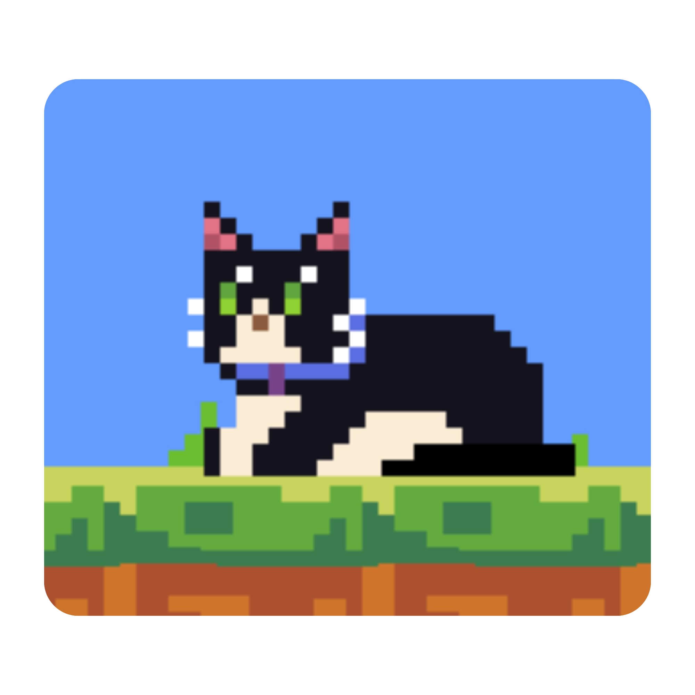

Hey there, I'm Antonio
| Computer Scientist | Junior Fullstack Developer | Photographer |
View My Work
| Computer Scientist | Junior Fullstack Developer | Photographer |
View My WorkHey! I'm Antonio Canale, an 18 year old from Peru with a passion for technology, photography and education. Welcome to my website! I started coding on a Lenovo laptop from 2010, experimenting with Python, C, and C#, and quickly became fascinated by the power of building things from scratch. Since then, I’ve worked with startups, contributed to real-world projects, and explored how AI and software can improve education, especially in low-resource environments. I’m also a published poet and a photographer, constantly inspired by the stories, cultures, and people around me. Right now, I’m focused on pushing my limits, building meaningful projects, and preparing to study Computer Science abroad. This website is a small window into that journey.
An adaptive AI tutor designed for low-resource educational settings, focusing on personalized explanations and accessibility.
Tech: Python, AI/ML
Repo
A fun pixel art platformer game, with four cute kittens as the protagonists: Panda, Bellist, Flora and Shany
Tech: Godot, Aseprite
Demo RepoA collection of 20 terminal-based games built in a single script, focusing on modular design and user interaction.
Tech: Python
RepoA top-down space themed bullet-hell roguelike 2D game, where you play as 'Destructor' trying to destroy the space aliance and the universe. With a unique upgrade system, a lot of different enemies and a final boss, this game climbed the charts of itch.io.
Tech: Godot, Aseprite
Demo Repo
.jpg)

.jpg)